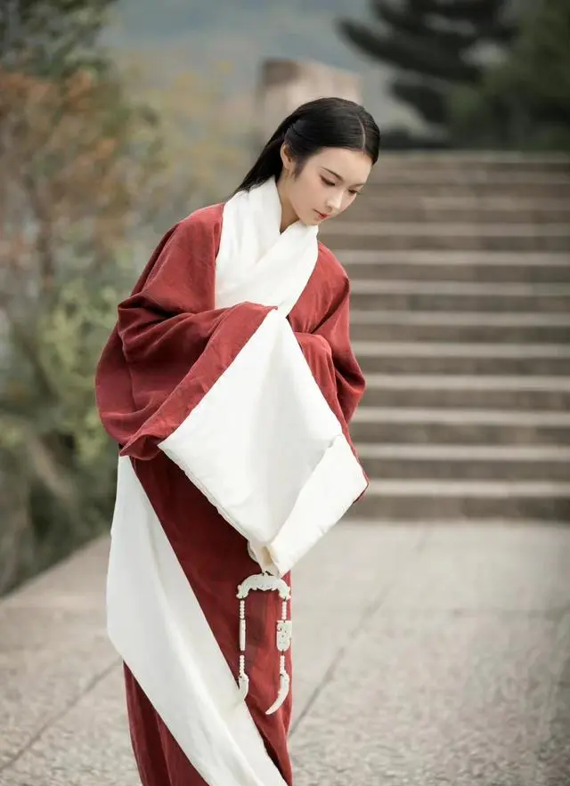
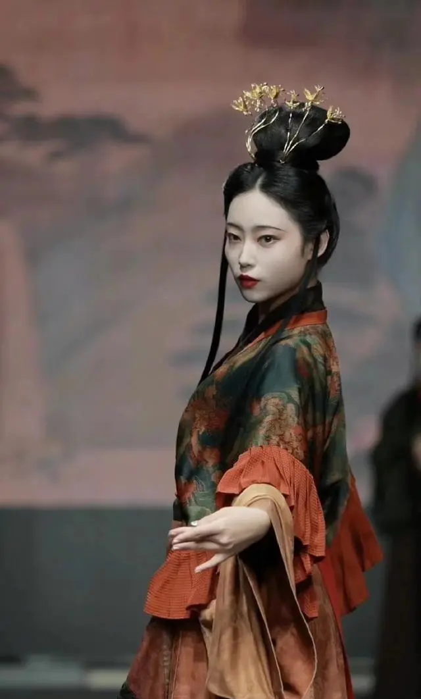
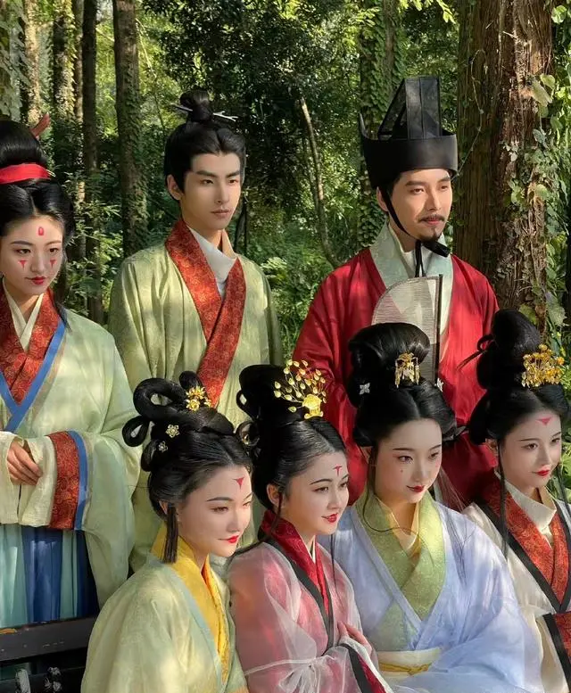

“中国有礼仪之大，故称夏；有章服之美，谓之华。” 我们中国自古就被称之为“衣冠上国，礼仪之邦”，而“衣冠”在我们的历史文化的发展中，也是占据着十分重要的一部分。现在越来越多的人喜欢汉服，关注汉服，也有了很多官方组织的活动，像今年的“国风大典”，以及最近的“国丝汉服节”等，都展示了汉服的美。

国丝汉服节的热度似乎不像国风大典那般高，整体的搭配造型也不像国风大典那般华丽多彩，但是却真正的做到复原汉服。不仅仅是从服装上复原，就连妆容、配饰都是完全还原，将历史汉服文化与现代时装周结合起来，展示了汉晋时代的服饰之美，让人一朝梦回汉晋时期。

国丝汉服节·汉晋风流：对于汉制、晋制汉服的宣传有着深刻的意义。 国丝汉服节上的同袍所穿着的汉服款式为汉制、晋制，符合汉服节的活动主题。 在我们的日常生活中，多件的汉服以宋制、明制以及唐风为主，对于汉制、晋制因为相关的文献比较少，并不是很多见。所以这一次以汉制和晋制为主的汉服节，对于宣扬汉制和晋制的汉服是有十分重要的意义的，也让我们更多地了解到了不一样的汉服形制

花开正好,秋风不燥。10月5日-6日“国风焕新夜”,让我们一起穿越千年回响，共燥东方盛事。近距离感受国风魅力，共鉴东方之美吧！